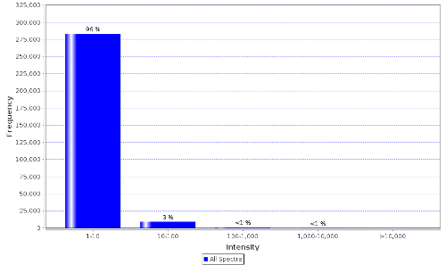

Explanation
A histogram representing the ion intensity vs. frequency for all MS2 spectra in the whole experiment. It is possible to filter the information for all, identified and unidentified spectra. This plot can give a general estimate of the noise level of the spectra.
Generally, one should expect to have a high number of low intensity noise peaks with a low number of high intensity signal peaks. A disproportionate number of high signal peaks may indicate heavy spectrum pre-filtering or potential experimental problems.
In the case of data reuse this plot can be useful in identifying the requirement for preprocessing of the spectra prior to any downstream analysis.
The quality of identifications is not linked to this data as most search engines perform internal spectrum preprocessing before matching the spectra. Thus, the spectra reported in a PRIDE experiment are not necessarily preprocessed since the search engine may have applied the preprocessing step internally. This preprocessing is not necessarily reported in the experimental metadata.
